一、正規化
一開始先提關係表示法，以利後續說明。
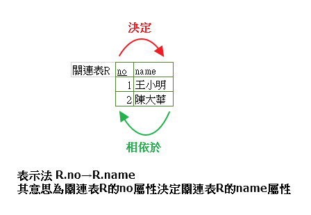
1、第一正規化(1NF)：去除多值屬性，關連表內的所有屬性值必須是單元值。
例如：
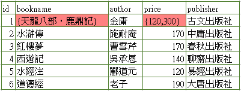
圖一、不符合1NF
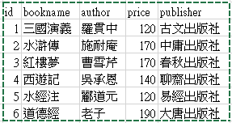
圖二、符合1NF
2、第二正規化(2NF)：把部份相依關係導正成完全相依。非候選鍵的屬性只功能相依於候選鍵的一部份稱之為部份相依。
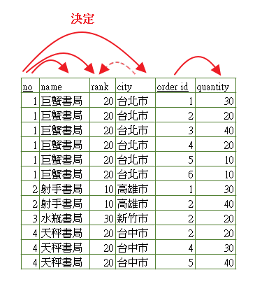
圖三、為原本的部份相依關係(虛線為遞移相依性暫不討論)
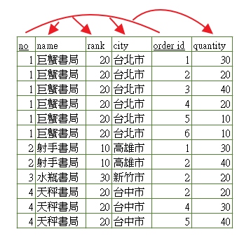
圖四、理想的完全相依關係，為兩PK(no，order id)共同決定所有非候選鍵的屬性
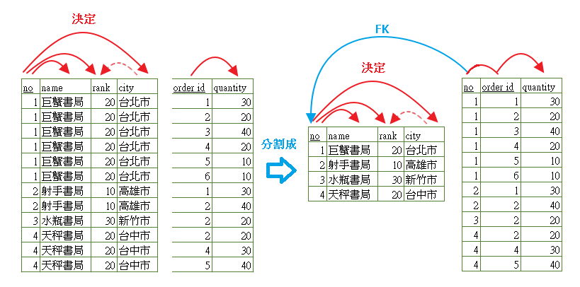
圖五、將其分拆成兩個關連表，以完成理想的完全相依關係
3、第三正規化(3NF)：去除遞移相依性(間接相依性)而成為直接相依性。讓其成為具有不屬於候選鍵的屬性之間，不可以有任何功能相依性。
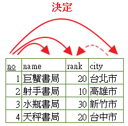
圖六、上圖為根據圖五作2NF後的關連表
根據圖六我們發現city→rank有遞移相依性，
例如我們只想在圖六關連表單純新增一筆city為「新北市」、rank城市等級為「20」的紀錄，
則必須還要no、name的值也一併輸入，否則新增會產生錯誤。
因此將圖六關連表分拆成兩個表格以處理掉遞移相依性，完成後如圖七
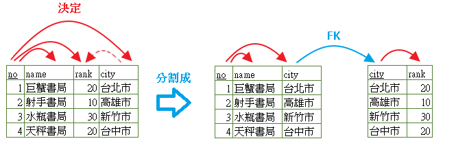
圖七
4、廣義第三正規化(BCNF)：前提符合3NF時，如果主鍵是由多個欄位組成，則主鍵中的部份欄位不可以相依於其他非主鍵的欄位。也就是說，非主鍵的欄位不可以決定部份主鍵欄位。
先來看另一例子圖八的相依性關係，name屬性值不能重復，name為候選鍵，
其中no與order id可決定quantity屬性，而name屬性可決定no屬性。
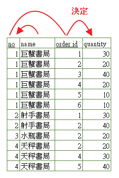
圖八
由圖八可知，no相依於name，擁有「非完整候選鍵」功能相依性問題(非主鍵的欄位不可以決定部份主鍵欄位)。
為了讓其符合BCNF，我們可將其拆成(no,name)、(no,order id,quantity)或
(name,no)、(name,order id,quantity)關連表皆可，下圖為拆成(no,name)、(no,order id,quantity)關連表。
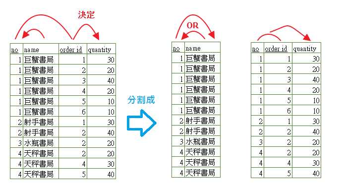
圖九
註：如果候選鍵只有一個的話，那麼BCNF便是原本的3NF。
5、第四正規化(4NF)：前提符合BCNF時，移除多重值相依性(MVD)稱之為4NF。
參考圖十另一個例子，一個學生可以屬於多個系別(修輔系)，
而某課程也可以是多個系別的必修課(共同必修科目)，
學生要獲得該系學位而與必修課程產生連結。
因此以上三個屬性複合起來便構成了唯一的候選鍵(主鍵)
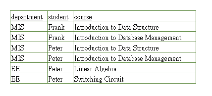
圖十
但我們發現它也包含了許多重複資料，
如果電機系(EE)來了一位學生Mike則勢必要在關連表加入兩筆必修科目資料，
如果電機系有30門必修科目，則該位學生就要一次新增30筆資料，就很麻煩了。
因此要想辦法移除上述的多重值相依問題。關連表分拆如圖十一。
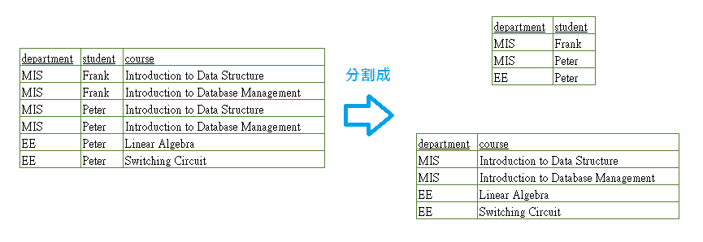
圖十一
6、第五正規化(5NF、PJ/NF)：移除「合併相依」性後稱之為5NF。
先考慮圖十二關連表，(no,id,sid)構成了整個關連表的主鍵，
而且不含任何功能相依性與多重值相依性，所以是4NF。
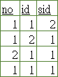
圖十二
但是將此關聯表分別對(no,id)、(id,sid)、(sid,no)做投影，得到圖十三，三個關連表，
如果再做自然合併的話，就可以得到圖十二關連表。
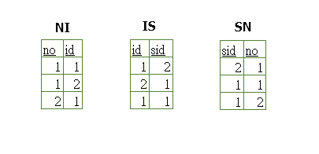
圖十三
一個關連表如果可以不失真的分割成三個關連表則稱作3-decomposible，
而這種3-decomposible的特性則稱為合併相依性(Join Dependency，簡稱 JD)。
既然已經知道圖十二是具有合併相依性，則將其去除合併相依性後得到圖十三，
我們稱圖十三符合5NF。
理論上，只要取得關連表的所有候選鍵及所有合併相依性，
就能辨別關連表是否為5NF。然而，要找出關連表的所有合併相依性並不是一件容易的事，
所以至今為止，仍然沒有一個明確的方法可以幫助我們判斷一個4NF的關連表不是5NF，
不過，幸好像這樣是4NF卻不是5NF的關連表並不多見。
另外還有一種正規化型式，稱為Domain-Key Normal From(DK/NF)，相關說明就請自行找資料了。
最後附上正規化型式之間的關係給大家參考
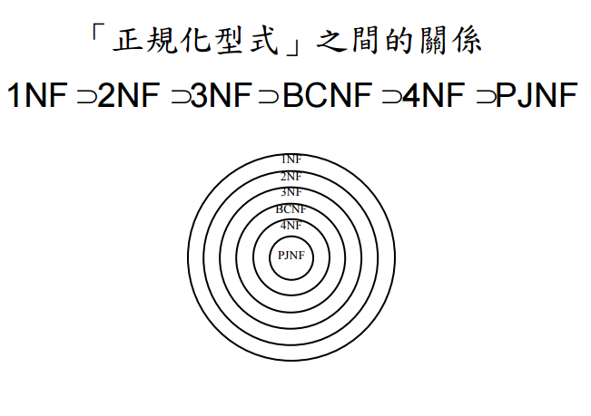
二、參考作法：
1、根據需求所得到的資訊，決定屬性與資料表名稱
2、決定屬性與資料表間的相依關係
3、決定PK與FK
4、一個子資料表只有n個FK(弱實體)時，可合成一個PK(視情況)，可不用再特地多加個辦識屬性(視情況)。
5、如果兩個實體具有N：M的關係時，其中間必須要再多一個實體，形成1：N和M：1的關係。
參考資料：